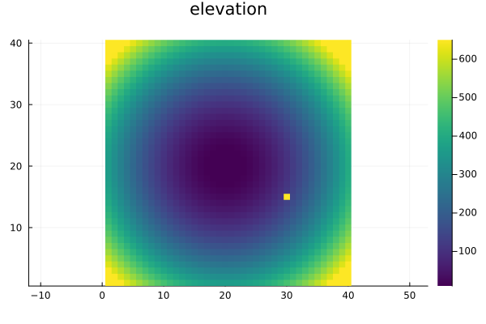
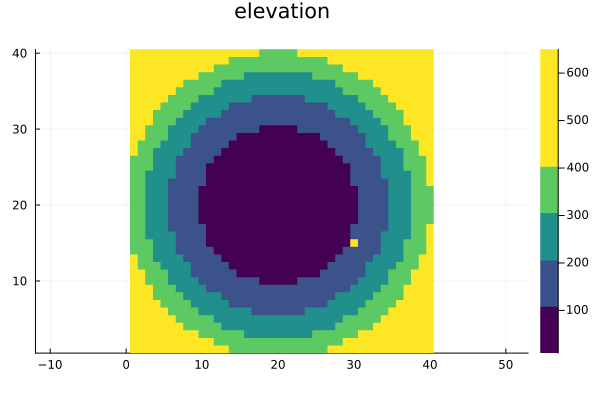
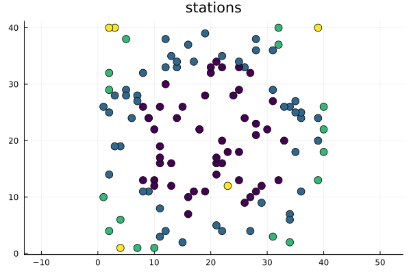
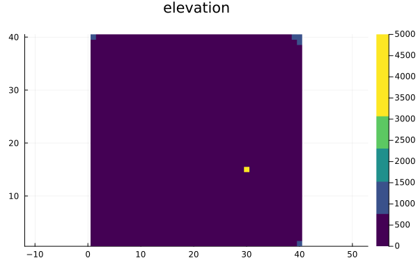

Plots
A specification goes last, after the values it colors. Plots needs no separate colorbar call: the class ticks ride along on the series.
Plots' default GR backend draws its own numeric colorbar ticks and ignores custom tick labels. colorbar_ticks is set on the series either way, and the pythonplot and pgfplotsx backends render the class intervals. Makie labels them on every backend.
Because the range methods are callable, Plots also accepts one directly as clims, e.g. heatmap(raster; clims = Percentile(2, 98)), with no colorspec at all.
Continuous heatmap
spec = colorspec(raster; colorrange = Percentile(2, 98))
heatmap(raster, spec; title = "elevation", aspect_ratio = :equal)
Graduated heatmap
spec = colorspec(raster, Quantile(5); colorrange = Percentile(2, 98))
heatmap(raster, spec; title = "elevation", aspect_ratio = :equal)
Graduated scatter of point data
The same rule colors points: xs and ys position them, values is what gets colored, and the specification goes last. A surface-like series colors its last positional argument; every other series is routed through marker_z or line_z, Plots' per-point color channels.
spec = colorspec(values, Pretty(5); colorrange = Percentile(2, 98))
scatter(
xs, ys, values, spec;
title = "stations", aspect_ratio = :equal, markersize = 6, legend = false
)
Shorthand: no specification at all
For a one-off plot, put the break method in the specification's slot. clims takes a color-range method and seriescolor a colormap; both are consumed and replaced by the computed values.
heatmap(raster, Quantile(5); clims = Percentile(2, 98), title = "elevation", aspect_ratio = :equal)A color-range method in the same slot gives the continuous case, heatmap(raster, Percentile(2, 98)).
Constant data
colorrange(spec) widens a constant range so the renderer has a nonzero span to map through, and display = false gives the exact (v, v) the data produced:
spec = colorspec(fill(7.0, 4), Quantile(4))
colorrange(spec), colorrange(spec; display = false)((6.5, 7.5), (7.0, 7.0))Your own keywords stay in charge
Everything the specification contributes is a default, so an explicit keyword on the call wins:
spec = colorspec(raster, Quantile(5); colorrange = Percentile(2, 98))
heatmap(raster, spec; clims = (0.0, 5000.0), title = "elevation", aspect_ratio = :equal)
Writing it out by hand
The recipes above are convenience. Underneath them a specification is three plain values, and passing those yourself works whatever else is in the call — your own recipe, a series type the recipes do not cover, an argument list they would collide with:
spec = colorspec(raster, Quantile(5); colorrange = Percentile(2, 98))
heatmap(
raster;
seriescolor = colorgradient(spec), clims = colorrange(spec),
colorbar_ticks = classticks(spec),
title = "elevation", aspect_ratio = :equal,
)colorrange(spec) is renderer-safe as it comes, so nothing here needs a special case for constant data. classticks(spec) carries the class intervals, and is nothing for a continuous specification, which needs no tick override — as on this whole page, the GR backend draws its own numeric ticks regardless, while pythonplot and pgfplotsx render the intervals.